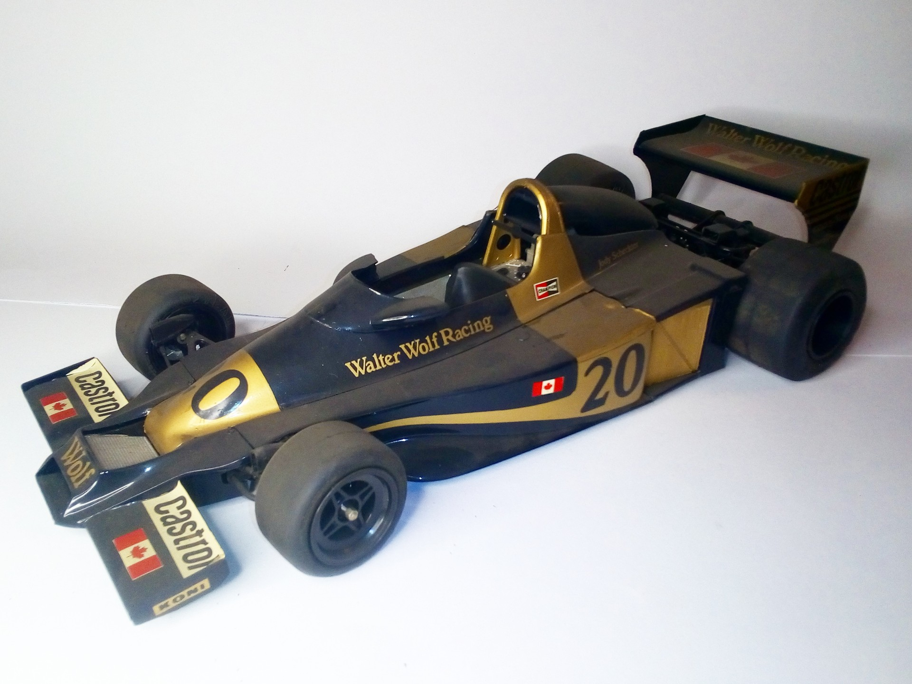

Auto e veicoli stradali · scale model archive
Wolf WR1 Ford
Wolf WR1 Ford — Kit: Tamiya, Scale: 1/72. Raced in 1977 F1 season Peculiar car as it won on its debut race, simple but efficient car, 3 wins in that…

Photo gallery
English description
Raced in 1977 F1 season
Peculiar car as it won on its debut race, simple but efficient car, 3 wins in that season
#1/12 #Tamiya
Descrizione italiana
Corse nel 1977 F1 season.
Particolare auto as lo won on its debut race, simple but efficient auto, 3 wins in che season.